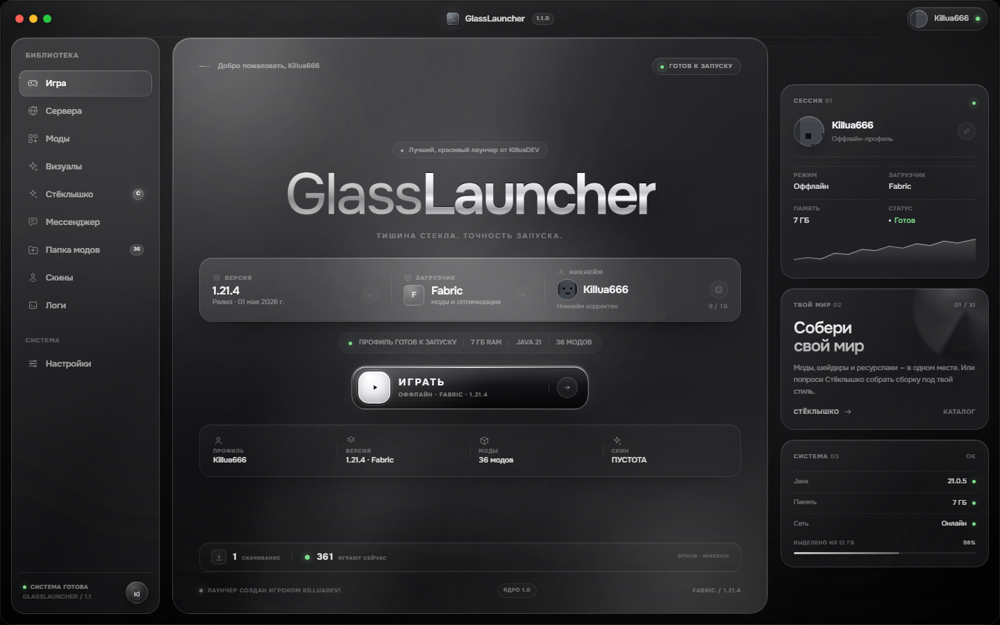
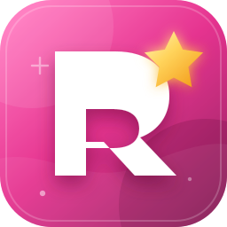

Пять загрузчиков
Fabric, Forge, NeoForge, Quilt и Vanilla. Выбери версию — лаунчер сам соберёт библиотеки и профиль.
Тишина стекла. Точность запуска.
Ваша игра — наша забота! Монохромный лаунчер Minecraft, в котором всё на месте: версии, загрузчики, моды, скины, мессенджер и Java 21. Без консоли, без шума, без лишних кликов.

GlassLauncher не пытается быть умнее тебя. Он просто делает свою работу: тихо, точно и красиво.
Fabric, Forge, NeoForge, Quilt и Vanilla. Выбери версию — лаунчер сам соберёт библиотеки и профиль.
Каталог Modrinth и CurseForge прямо в лаунчере. Fabric API, Sodium, Iris Shaders — в один клик. Уже установленные зависимости не скачиваются повторно.
Загрузи PNG или выбери монохромный пресет. Скин применяется в игре через локальный ресурспак — без аккаунта Microsoft.
Лаунчер найдёт установленную Java или скачает подходящую. Ассеты, библиотеки и загрузчик подтянутся сами.
Профиль, статус в сети, личные диалоги, группы, голосовые сообщения и звонки. История переписки остаётся даже после выхода из аккаунта.
Никаких чёрных консольных окон и лишних процессов. Только игра, музыка и твой мир. Логи — если понадобятся.
Каждый экран — часть одного спокойного интерфейса. Нажми на скриншот, чтобы рассмотреть.
Мы добавляем только те сервера, куда заходим сами. Сейчас в списке — MineRich: уютное выживание с живой экономикой и ивентами.

Выживание · экономика · события
Мир, где приятно остаться: честное выживание, живой рынок, сезонные ивенты и дружелюбное сообщество. Заходи один или приводи друзей — занятие найдётся для каждого.
Play.minerich.net
Открой Minecraft → «Сетевая игра» → «Добавить сервер», вставь адрес и сохрани.
Сайт сервераОдин установщик. Внутри — всё, что нужно для первого запуска: Java 21, библиотеки, ассеты и любимые загрузчики.
Установщик не подписан цифровым сертификатом, поэтому SmartScreen может попросить подтверждение. Сверь SHA-256 — и запускай.
D38FA9065F432E304CCE769E721566144AAEDBDEEF084B71CBF0EAF58E404106
Без ручной настройки Java, папок и аргументов запуска. Всё, что нужно, лаунчер сделает сам.
Нажми «Скачать GlassLauncher» и запусти `GlassLauncherSetup.exe`. Windows может спросить подтверждение — это нормально для неподписанного установщика.
Введи ник, выбери версию Minecraft и загрузчик. Для первого раза подойдёт Fabric или Vanilla — лаунчер подсветит, что уже готово.
Java 21, библиотеки, ассеты и загрузчик установятся автоматически. Дальше — только игра. Моды и скины можно добавить в любой момент.
Если чего-то не хватает — загляни в README или напиши в GitHub Issues.
Да. GlassLauncher работает оффлайн, не просит пароль Microsoft и не отправляет данные на сторонние серверы. Установщик можно проверить по SHA-256, а исходники и сайт лежат в открытом репозитории.
Все релизы, снапшоты и старые версии из официального манифеста Mojang. Загрузчики: Fabric, Forge, NeoForge, Quilt и Vanilla. Версию можно менять перед каждым запуском.
Нет. Лаунчер найдёт подходящую Java 21 или скачает её автоматически. Вручную настраивать переменные среды и аргументы запуска не нужно.
Моды — в %APPDATA%\GlassLauncher\mods. Папка открывается одной кнопкой прямо из лаунчера. Скины применяются через локальный ресурспак, поэтому работают даже в оффлайн-режиме. Если зависимость уже лежит в папке, лаунчер не предложит скачать её снова.
Установщик не подписан платным сертификатом. Windows показывает предупреждение для многих небольших проектов. Нажми «Подробнее» → «Выполнить в любом случае» и сверь SHA-256 с указанным на сайте.
Да, на серверах, где разрешён оффлайн-вход. Для серверов с обязательной лицензией нужен аккаунт Microsoft — GlassLauncher его не заменяет.
Твой мир уже собран. Осталось нажать «Играть».
Скачать GlassLauncherWindows 10/11 · 7,15 МБ